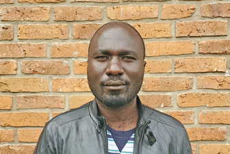
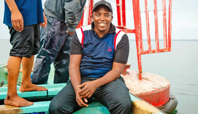

Welcome to Datika!!!
We’are glad you’re here at our website, datika! As an avid enthusiast of statistics and the R programming language, we’ve created this platform to share our experiences, research and projects with fellows
Datika is more than just a showcase of our work – it’s a thriving community where you can engage with the content, expand your knowledge, and connect with others in the fascinating world of statistics and R. Meet the people that make datika up and running!
Pause for a moment and Join us
Mr. Masumbuko Semba
Role: Mentor
Semba works at the Nelson Mandela African Institution of Science and Technology. He use programming language like R and Python to manage and analyse data and report using Web Applications, Website or blogs. Semba also design graphics and automate plots, maps for static and interactive document.
lugosemba@gmail.com | +255 717 603 703
Ms. Nyamisi Peter
Role: Mentor
Nyamisi works at University of Dar es Salaam. She is phytoplankton exeprt using earth observation data and automate data acquisation, process, analyse. She is excellent in using quarto that combine R codes and text to automate generation of technical documents in word, pdf or html formats.
nyamisip@gmail.com | +255 717 516 711
Mr. Kassim Said
Role: Mentee
Kassim is an accountant and financial analyst. He works as an accountant at Letshego Faidika Bank and as a financial consultant at Asasi ya Uwezeshaji Tanzania under the USAID Heshimu Bahari Project.
kassim.salum@asuta.or.tz | +255 743 956 226
Mr. Kessy Revocatus
Role: Mentor
Kessy Revocatus is a mathematician current teaches at Hannah Bennie Schools School. Recognizing the role of data in driving business, he is learning R programming to automate data analysis, model and reporting.
kessyluhegaa@gmail.com | +255 711 396 392
Mr. Barakael Matulu

Role: Mentee
Barakael works on the USAID Heshimu Bahari Project. He is an aquatic ecologist with interests in marine resources management and climate change issues. Recently, he has also developed an interest in automating data acquisition, processing, analysis, and reporting in R, as well as graphic design.
bmatulu@gmail.com | +255 716 349 126
Mr. Emmanuel Mpina
Role: Facilitator
Agnatquo digento tatqui officae rehentor reped quibero officae consenda que nobis ini tet libus, sanda debis sitatem pelignima doluptas eos sust parchitem dolor arume cumquia si coribus voluptio ent rem qui beatateseque nonsento modicia eprat.
emmanuel.mpina@tnc.org | +255 758 327 749
Ms. Amina Kibola
Role: Mentee
Amina works at National Environment Management Council. She has academic background in ecohydrology and natural resources management, coupled with research experience. Working in the field of environment where role of data in policy development is crucial for informing decision, I have developed interest in learning R programming to be able to automate data; process; analyse and reporting in R.
amina.kibola@nemc.or.tz | +255 784 368 987
Mr. Juma Charles

Role: Mentee
Juma Charles works at TANESCO as land surveyor. He uses tools like Excel, ArcGIS Pro, and AutoCAD to transform spatial data into information. Currently, he’s expanding his expertise by mastering R to enhance his career capabilities.
charlesjuma85@gmail.com | +255 783 293 841
Mr. Amon Xanda
Role: Mentee
Amon has a strong background in GIS from various sectors such as forestry and health. Currently, he works as a Marine Spatial Planning Scientist at TNC, using his GIS expertise to drive impactful projects for marine conservation. He is actively looking to expand his skills by exploring the potential of R for advanced data analysis and visualization.
xxxx@gmail.com | +255 684 044 789
Ms. Elika Kileo
Role: Mentee
Elikananyi Kileo, a medical doctor at Kibada Health Centre, has an interest in paediatrics and child health. Recently, she has also developed an interest in automating data, processing, analysis, and reporting in R
elikananyikileo1@gmail.com | +255 756 048 083
Mr. Hilary Mkai
Role: Mentee
Hillary is contributing to the USAID Heshimu Bahari project under ASUTA. He’s on a journey of discovery, mastering R to enhance his skills in data management and analysis. With an eye on the web development horizon, he’s gearing up to tackle data challenges head-on, making every click and scroll count.
mkaihillary01@gmail.com | +255 738 238 530
Mr. Humphrey Mahundi
Role: Mentee
Humphrey Mahudi, a Senior Marine Conservation Warden with MPRU’s research and monitoring department in Tanga Coelacanth Marine Park, collaborates in biodiversity assessments using environmental DNA (eDNA). He seeks to enhance his R skills to further his work and research efforts.
xxxxxxxxxx@gmail.com | +255 716 196 131
Ms. Kulwa Mtaki
Role: Mentee
Ms. Kulwa Mtaki serves as a Marine Conservation Warden at the Marine Parks and Reserves Unit in Tanzania. Her expertise lies in fisheries and aquaculture, marine ecosystem monitoring, and data management and analysis using R-program.
mtakikulwa@yahoo.com | +255 759 226 268
Mr. Kaijage Laurian
Role: Facilitator
Kaijage Laurian, an Ecological Data Manager at Mwambao Coastal Community Network. With background in R for data-driven decisions, Kaijage seeks to integrate machine learning and artificial intelligence into ecological researches.
kaijagelaurian25@gmail.com | +255 654 592 215
Mr. Paschal Mkongola
Role: Mentee
Paschal works at Marine parks and Reserves. I have also developed an interest in automatic data, Processing, analysis and Reporting in R, as well as graphic design, career capabilities.
paschalmkongola@gmail.com | +255 752 918 484
Mr. Samson Job

Role: Facilitator
Samson Job is an aquatic scientists whose interest revolves around climate changes issues and aquatic pollution. To overcome these challenges, he is advancing his skills using R to facilitate data-driven and evidence-based policy making in combating the problems of aquatic pollution and climate changes.
samjob4321@gmail.com | +255 767 525 022
Mr.Stephano Semba
Role: Mentee
Stephano Semba is employed by the Tanzania Forestry Service (TFS) as a Forestry Conservator. Understanding the importance of programming, I have dedicated myself to acquiring knowledge in data science, report writing, and spatial analysis to address the challenges in conservation.
xxx@gmail.com | +255 677 250 711
Mr. Gabriely J. Namate
Role: Mentee
Namate is employed at Pangani District Council as a Fisheries Officer and Aquaculture Specialist. Recognizing the power of R programming in data, he decided to learn and acquired necessary skills for statistical analysis, plotting, and sharing the finding.
xxx@gmail.com | +255 654 989 271
Mr.Shadrack Nyanda
Role: Mentee
Shadrack Nyanda is a dedicated Health, Safety & Environment (HSE) practitioner passionate about using R programming for data computation, analysis, and image generation. With a focus on data manipulation and visualization in the context of health, safety, and environmental fields, Shadrack aims to drive efficiency and promote safety and sustainability.
sylivestershade@gmail.com | +255 744 034 000
Ms. Joyceline David
Role: Mentee
I’m Joyceline Gonsalves, an assistant lecturer at the university. I am now doing my PhD at the University of Newcastle in the United Kingdom, where I am researching biological control (entomopathogenic fungi and bacteria) as part of an IPM approach for Tuta absoluta.
gonsalvesjoyceline@gmail.com | +44 7909 858960
Mr. Zac Maritime
Role: Facilitator
Zac manages the blue economy (oceans for business) in the Western Indian Ocean for The Nature Conservancy (TNC). Before that, he worked on using maps and data for conservation across Africa at WWF. He’s an expert in planning how we use the ocean sustainably, environmental protections, and land/sea surveying.
xxx@gmail.com | +254 721 671642
Ms. Edina Godfrey Swai
Role: Mentee
Ms. Edina works as the Seascape coordinator for Asasi ya Uwezeshaji Tanzania (ASUTA) under the USAID Heshimu Bahari Project, based in the Mtwara Seascape (Mnazi Bay~Ruvuma Estuary Marine Park). She has experience in climate change adaptation and mitigation, as well as expertise in natural resource management, environmental management, and conservation. She is currently participating in an R programming session with the primary aim of learning modern techniques in data analytics and computation.
xxx@gmail.com | +255 768 486 385
Mr. James Lusana
Role: Mentee
James Lusana, an Assistant Lecturer at the University of Dar es Salaam, is researching catfish in Lake Tanganyika for his PhD. He uses advanced imaging techniques to study their physical traits and analyzes their diet and genetics to understand their ecological role and evolution. His work aims to uncover how these fish have adapted and diversified in their environment.
xxx@gmail.com | +255 768 310 668
Mr. KELVIN KARISTO
Role: Mentee
With a background in transport and logistics at SAMEKI COMPANY LTD, he is taking a proactive approach to his professional development. Recognizing the increasing importance of data analysis in his field, he’s currently engrossed in learning R programming.
xxx@gmail.com | +255 713 363 510
Ms. Swaumu Haruna
Role: Mentee
Ms Swaumu Haruna, a has a bachelor’s degree in environmental science and management from Sokoine University of Agriculture. She is currently learning R programming to enhance her skills in data analysis, statistical computation, and data visualization. She aim to leverag coding to automate data analysis and generate data-driven solutions for environmental matters.
xxx@gmail.com | +255 627 851 120
Mr. Ekumbi Boniphace
Role: Facilitator
Ekumbi Boniphace is currently working on the project, where he is responsible for promoting schools in Tanzania. He utilizes various tools such as ArcGIS, Kobo, and Adobe Photoshop to carry out his tasks. Recently, he is expanding his skill set by learning R and Python for data processing, analysis and reporting.
ekumbiboni@gmail.com | +255 716 494 125
Ms. Maria Pentzel
Role: Mentee
Ms. Maria Pentzel, Marine Conservation Warden at Marine Parks and Reserves Unit (MPRU). Her expertise lies in fisheries, aquaculture and Marine Spatial Planning. Seeking to enhance her skills in data analysis.
xxx@gmail.com | +255 782 702 024
Mr. Daniel Mallya
Role: Mentee
Daniel Mallya a Marine Community Conservation Warden with MPRU in Mafia Island Marine Park I’m current in R programming session with Prime aim to learn modern techniques in data analytic and computation
johndan818@gmail.com | +255 687 352 428